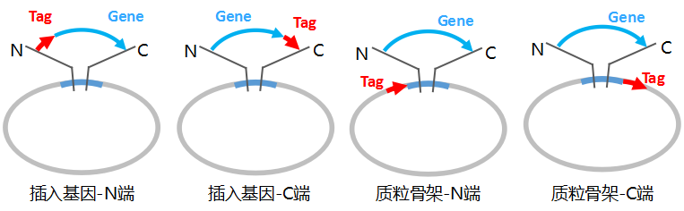

空载体：不含有外源基因插入，可供使用者进行目的片段的插入操作。
编码一个插入基因：质粒中已经插入1段外源基因；使用者可以直接进行外源基因表达等操作，或者通过酶切等方法替换掉其中的外源基因片段。
编码多个插入基因：质粒中已经插入2段或以上的外源基因；使用者可以直接进行外源基因表达等操作，或者通过酶切等方法替换掉某些或者全部外源基因片段。
编码gRNA/shRNA：质粒中含有编码gRNA或者shRNA的相关序列。
1.如果插入基因中的标签/融合蛋白是您添加的，那么请根据位置选择：插入基因-N端或插入基因-C端。
2.如果载体上已有相应的标签/融合蛋白，您只需要将基因克隆在质粒中，请根据位置选择：质粒骨架-N端或质粒骨架-C端。

 pEGFP: 质粒序列、图谱与支持文档
pEGFP: 质粒序列、图谱与支持文档